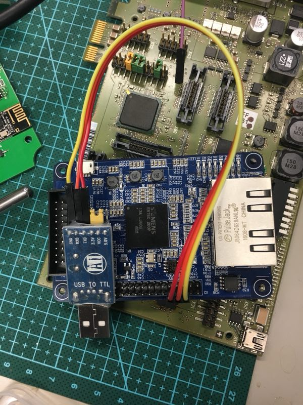

项目经验

IFT多功能在线测试台
项目介绍：ICT测试柜，自动化，系统化测试PCBA产品。
主要职责：调试测试柜硬件，确保电压电流输出、matrix通道切换、trigger电子万用表等功能正常；基于stm32设计编写嵌入式程序，实现与上位机通信、与各matrix卡等功能模块通信；根据各户要求在CVI环境下，设计编写上位机GUI软件，与测试柜通信，与PLC通信控制电机工作，实现自动化测试。

Profinet从机模块
项目介绍：profinet从机模块。
主要职责：寻找比较市面上的profinet硬件供应商确定软件平台，基于西门子ERTEC200P芯片上运行ecos系统和profinet协议栈进行应用开发。